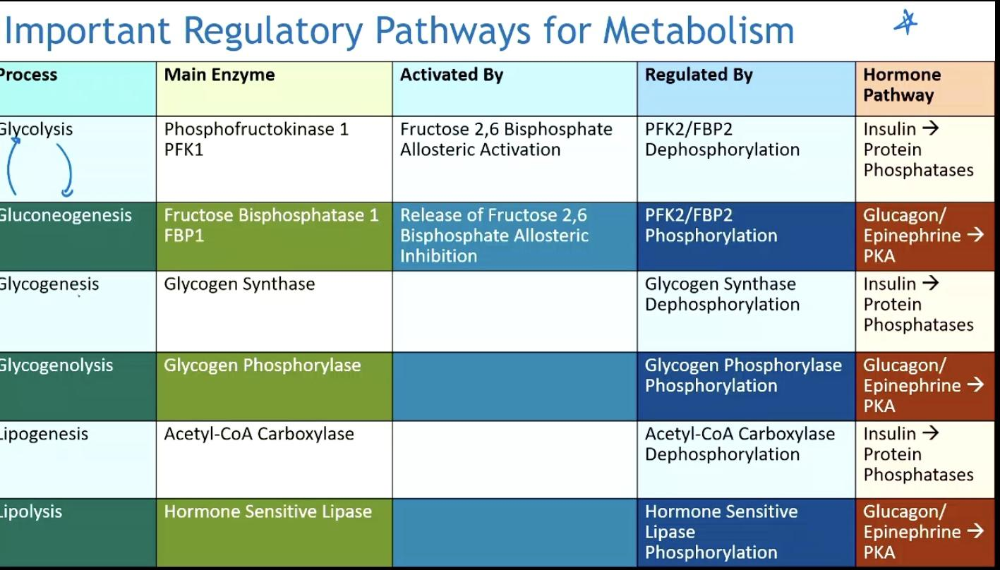
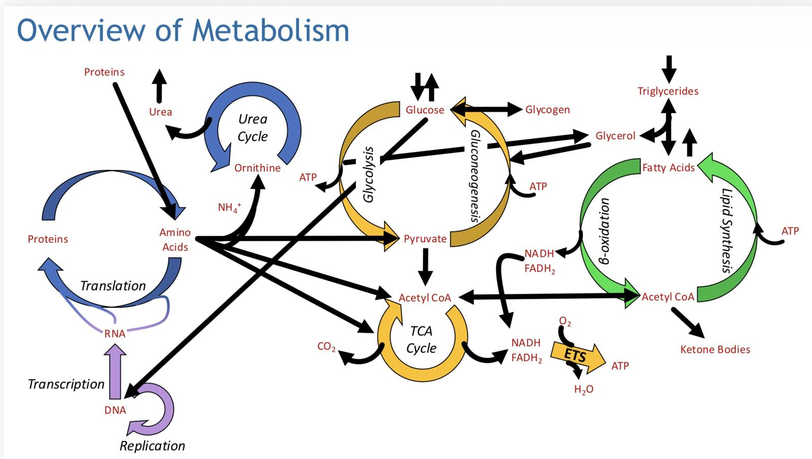

LC23 · Dr. Basil's slide, same layout · say each cell out loud, then tap it
| Process | Main enzyme | Activated by | Regulated by | Hormone pathway |
|---|---|---|---|---|
| Glycolysis | tapPhosphofructokinase-1 | tapFructose-2,6-bisphosphate — allosteric activation | tapphosphofructokinase-2 / fructose-2,6-bisphosphatase — DEphosphorylation | tapInsulin → protein phosphatases |
| Gluconeogenesis | tapFructose-1,6-bisphosphatase | tapRELEASE of fructose-2,6-bisphosphate allosteric inhibition | tapphosphofructokinase-2 / fructose-2,6-bisphosphatase — PHOSPHORYLATION | tapGlucagon / epinephrine → protein kinase A |
| Glycogenesis | tapGlycogen synthase | — blank on slide | tapGlycogen synthase — DEphosphorylation | tapInsulin → protein phosphatases |
| Glycogenolysis | tapGlycogen phosphorylase | — blank on slide | tapGlycogen phosphorylase — PHOSPHORYLATION | tapGlucagon / epinephrine → protein kinase A |
| Lipogenesis | tapAcetyl-CoA carboxylase | — blank on slide | tapAcetyl-CoA carboxylase — DEphosphorylation | tapInsulin → protein phosphatases |
| Lipolysis | tapHormone-sensitive lipase | — blank on slide | tapHormone-sensitive lipase — PHOSPHORYLATION | tapGlucagon / epinephrine → protein kinase A |

